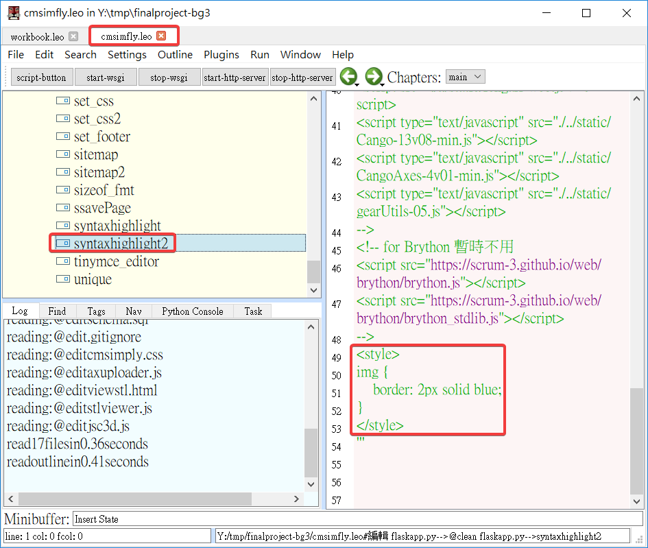

Week10
一、下載新版的p37
將 stop.bat 改為
@echo off set Disk=y REM 關閉 SciTE taskkill /IM Sc1.exe /F REM 關閉 python taskkill /IM python.exe /F taskkill /IM pythonw.exe /F REM 關閉 stunnel REM taskkill /IM stunnel.exe /F REM 關閉 fossil REM taskkill /IM fossil.exe /F REM taskkill /IM sharex.exe /F REM 清除 log 資料 path=%PATH%; REM del /Q /F V:\tmp\*.* REM 終止虛擬硬碟與目錄的對應 subst %Disk%: /D REM 關閉 cmd 指令視窗 taskkill /IM cmd.exe /F REM taskkill /IM mingw32 /F EXIT
二、修改期末專案
- 分支：master 改為 gh-pages
- 修改 README.md 內容
- 在 leo 改 blog 的路徑
- 在 leo 改 blog 的 DISQUS_SITENAME = "mdecadp2018" , 讓 blog 有討論區

- 修改網站的 Config 和簡介
- 在 leo 改 syntaxhighlight and syntaxhighlight2 使圖片有外框
<style> img { border: 2px solid blue; } </style> - 修改 blog 的標題和 About
- 修改 reveal 的標題和附加資訊
Experience9 << Previous Next >> Experience10